🦴 NovaBone Dynamics
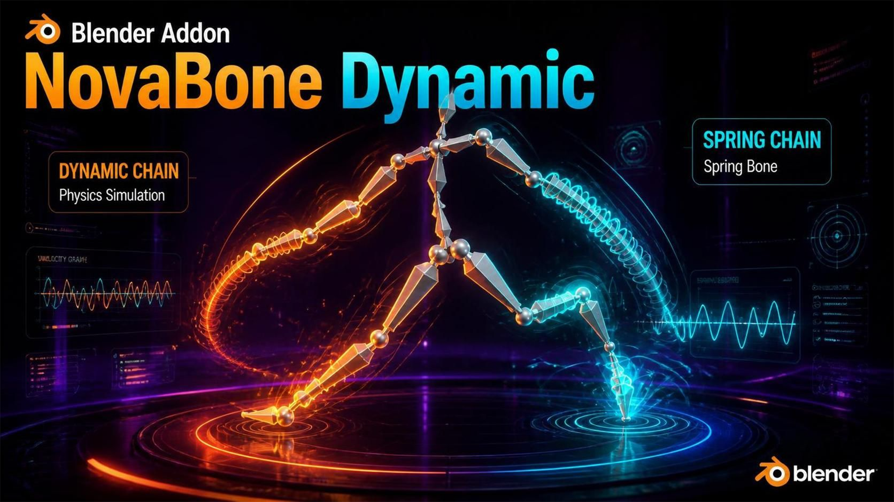
뼈 체인 물리 시뮬레이션 애드온 — 머리카락, 꼬리, 스커트, 액세서리, 지글본을 클릭 몇 번으로 자동 물리 애니메이션으로 만들어 줍니다.제작자: Chamiseul
🆕 v1.3.0 릴리즈 노트
v1.2.0 이후 바뀐 것을 전부 여기에 적었습니다. 수치는 테스트 리그(구 위에 놓인 체인, 뿌리 근처에 닿는 체인, root 본에 키를 준 같은 체인)에서 캐시를 비운 상태로 측정한 값입니다.
Fix Bones: 마스터 본도 방향을 맞추고, 진짜 애니메이션만 본을 막습니다
- 자식이 머리 위에 있는 본은 이제 그 자식 방향으로 돌립니다. 언리얼 리그는
짧은 마스터 본(
MSTR_hair_back_r)과 첫 번째 링크를 같은 관절 위치에 둡니다. 메울 간격도, 향할 방향도 없어서 이런 본은 그대로 두었고, 익스포터가 정한 방향을 그대로 보고 있었습니다. 이제 자식 본 자신의 축, 즉 체인이 실제로 놓인 선을 따라갑니다. 길이는 바뀌지 않고, 스킨된 메시가 움직이지 않았는지는 Fix Bones가 그대로 확인합니다. - 본 자신의 포즈 채널(위치·회전·스케일)에 키가 있을 때만 본을 막습니다. 커스텀 프로퍼티나 컨스트레인트 영향도에 키가 있어도 본 방향을 바꿔서 메시가 움직이지는 않는데, 전에는 그 본 전체를 애니메이션 있는 본으로 취급했습니다.
- Check가 키 때문에 건드리지 않은 본의 이름을 보여 줍니다. 전에는 개수만 나왔습니다.
캐릭터 안에 묻힌 머리카락 뿌리가 체인을 흔들어 놓지 않습니다
캐릭터에서는 충돌 대상이 보통 몸 메시 자체이고, 머리카락 뿌리는 두피 안쪽에, 귀걸이 고리는 귓불 안쪽에 있습니다. 체인의 그 부분은 애니메이션이 그렇게 놓은 것인데, 솔버가 이걸 충돌로 보고 움직일 수 없는 뿌리를 축으로 밖으로 밀어내서 체인 전체가 흔들렸습니다.
이제 애니메이션 포즈가 이미 충돌체 속에 묻어 둔 부분은 — 체인의 뿌리에서 끊기지 않고 이어진 구간만 — 건드리지 않습니다. 체인 중간의 본을 애니메이션이 충돌체 속으로 지나가게 하는 경우는 그대로 충돌로 처리합니다. 닫힌 부피가 아닌 메시(평면, 천)는 안쪽이 없으므로 묻힌 것으로 취급하지 않습니다.
체인 뿌리가 구 안쪽 0.14 m에 있는 장면에서 측정(끝 본이 애니메이션 위치에서 벗어난 거리, 전 → 후): 뿌리 정지 0.395 → 0.087 m, 뿌리가 움직일 때 0.570 → 0.147 m, 부드러운 체인 0.589 → 0.186 m, 뿌리가 움직일 때 가장 꺾인 관절 89° → 28°. 더 깊이 묻힌 체인(절반이 안쪽)은 전처럼 애니메이션 그대로입니다 (0.040 → 0.047 m).
💡 캐릭터 전체를 대상으로 해도 여전히 심하게 흔들리면 문제 해결의 "캐릭터를 충돌 대상으로 쓸 때"를 보세요.
첫 번째 본이 고정된 머리를 축으로 크게 꺾이지 않습니다
체인의 첫 번째 본은 애니메이션된 부모에 매달려 있어서 머리가 움직이지 않습니다. 충돌체가 그 머리에 Radius보다 가까이 있으면, 접촉할 때마다 움직이지 않는 피벗을 축으로 본을 전체 Radius만큼 밀어냈고, 그게 root 바로 아래의 "ぐきぃ" 꺾임이었습니다. 이제 본이 지켜야 하는 거리를 "머리의 실제 거리 → 끝에서 전체 Radius"로 서서히 키워서, 본이 필요한 만큼만 기웁니다.
12가지 설정(Radius 3종 × Stiffness 2종 × 정지/움직이는 root)에 충돌체 위치 4곳씩 측정: 첫 번째 본이 애니메이션 방향에서 벗어난 각도 57° → 16°, 가장 꺾인 관절 58° → 16°, 튐 0.065 → 0.011, 채터 0.0225 → 0.0161, 관통은 전후 모두 0. 더 나빠진 설정은 없습니다. Probe 모드에서만 적용되고 Precise는 전체 반경 그대로 정확히 접촉합니다.
Influence가 1 미만이어도 충돌체를 뚫지 않습니다
Influence는 시뮬레이션 포즈와 원본 애니메이션을 섞는데, 원본은 충돌체를 모르기 때문에 섞인 포즈가 충돌체 안으로 들어갈 수 있었습니다. 이제 섞인 포즈를 다시 밖으로 밀어내고 아래 본들이 따라가서 체인이 끊기지 않습니다. 구를 뚫는 체인의 관통: Influence 0.5 0.062 → 0, Influence 0.3 0.098 → 0.
새 기능: Tip Radius
Bone Collision Shape → Tip Radius. 마지막 본의 충돌 반경을 Radius에 대한 비율로 정합니다. 그 사이의 본은 직선으로 줄어듭니다. 1(기본값)이면 처음부터 끝까지 같은 반경입니다. Show Bone Shapes로 그려지는 본 모양도 같이 줄어듭니다.
새 기능: Keep Animated Clearance
Bone Collision Shape → Keep Animated Clearance (기본 OFF). 애니메이션 포즈가 이미 Radius보다 충돌체에 가까운 곳 — 머리카락이 두피에 붙은 자세 — 에서는 전체 Radius까지 밀어내지 않고 그 간격만 유지합니다. 허용 간격은 줄어들 땐 즉시, 다시 늘어날 땐 프레임당 40%씩 회복되고 Radius의 30% 아래로는 내려가지 않아서 표면 속으로 가라앉지 않습니다. 측정: 애니메이션 포즈에서 끝 본이 벗어난 거리 0.054 → 0.042 (−23%), 튐 0.027 → 0.017 (−35%), 관통 0.
Chain 모드에서 Stiffness가 이제 동작합니다
Chain 모드에서 Stiffness가 당기는 힘을 계산만 하고 버리고 있어서 Stiffness가 아무 효과가 없었습니다 — 0, 0.3, 0.6이 완전히 같은 움직임이었습니다. Head Stiffness(Floating Head)도 같은 버그로 머리를 원위치로 당기지 못했습니다. 둘 다 이제 동작합니다.
⚠️ 기존 씬이 더 뻣뻣해 보입니다. 지금까지의 Chain 모드 씬과 프리셋은 전부 Stiffness가 없는 상태로 맞춰진 것입니다. 체인이 너무 서 있으면 Stiffness를 낮추세요: 0.05~0.1 정도면 늘어지고, 0.5면 이미 중력을 버티고 거의 곧게 섭니다.
얇은 체인이 충돌체 속으로 가라앉지 않습니다
충돌체 안으로 자기 반지름보다 깊이 들어간 프로브는 감지되지 않아서, 한 번 그만큼 들어가면 계속 가라앉았습니다. 이제 표면 뒤쪽의 점도 감지합니다 (면의 뒤쪽으로 빠져나가는 레이로 확인하므로, 날카로운 모서리 바깥의 점을 안쪽으로 착각하지 않습니다).
Radius 0.01일 때 관통 깊이: 구 위의 체인 0.028 → 0.006 (최대 0.073 → 0.018), root가 움직이는 같은 체인 0.089 → 0.0003, 수잔 0.196 → 0.008, 큐브 0.011 → 0.0004. 보통 Radius에서는 그대로입니다.
본의 뿌리 쪽에 닿아도 꺾이지 않습니다
충돌체가 본의 머리(head) 쪽에 닿으면 끝(tail)만 밀었습니다. 그러면 부모는 그대로인 채 본이 자기 머리를 축으로 크게 돌아서, 닿은 관절 바로 아래에서 체인이 꺾였습니다. 이제 밀어내는 양을 나눕니다: 접촉점이 본의 어디쯤인지에 따라 끝이 그만큼, 나머지는 부모의 끝(= 이 본의 머리)이 받습니다.
7개 장면(충돌체 위치 5가지씩) 측정: 튐은 6개에서 줄고 1개는 같습니다 — root가 움직이고 Radius 0.01인 체인 0.166 → 0.035, 같은 체인이 정지 상태일 때 0.123 → 0.035, 본 머리 쪽 충돌체 0.176 → 0.093; 뿌리 근처 충돌체에서 가장 꺾인 관절 29° → 16°. 채터는 모든 장면에서 0.04 미만입니다.
본이 시뮬레이션 모양에 정확히 놓입니다
솔버 안에서 충돌이나 스무딩이 부모 본의 끝을 옮긴 뒤에도 자식 본은 부모 끝이 원래 있던 자리에서 계속 측정하고 있었습니다. 그래서 관절에서 체인이 벌어졌고 본이 시뮬레이션 모양에서 9~18 mm 벗어나 놓였습니다. 이제 0입니다.
체인을 다시 만들어도 기본 자세가 바뀌지 않습니다
체인 추가·삭제, Copy Settings, Undo는 시뮬레이션을 다시 만듭니다. 이때 물리가 본에 남긴 자세를 새 기본 자세로 잡아서, Stiffness가 당기는 목표가 할 때마다 조금씩 밀렸습니다. 이제 다시 만들어도 기본 자세가 유지됩니다. 일부러 바꾸려면 Capture Current Pose As Base를 쓰세요.
Blender 4.4+ 키프레임을 제대로 읽습니다
4.4+ 액션(레이어/슬롯)의 키프레임을 찾지 못해서, 체인 안의 애니메이션된 부모 본이 애니메이션이 없는 본으로 취급됐습니다.
Simulation Nodes 엔진
- 재생 첫 프레임에 튀지 않습니다 — 장애물을 프리롤 전에 설정해서 스트랜드가 장애물에 닿은 채로 안착하고, Build 때 본을 안착한 스트랜드에 맞춰 놓습니다. 프레임 1 → 2 튐: 0.76 m → 0.008 m.
- 좌우 대칭 체인이 똑같이 움직입니다 — 좌우 차이 0.58 m → 0.00002 m.
- 본이 스트랜드를 정확히 따라갑니다 — 0.53 m → 0.005 m.
- 장애물 슬라이더가 바로 반영됩니다 — Margin, Friction, Softness, Deforming Target, Edge Contacts를 바꿔도 다시 Build할 필요가 없습니다.
- 장애물 Friction = 패널의 Friction — 전에는 이 모드에서 숨겨진 NovaSol Friction 값을 읽었습니다.
- Time Scale이 스트랜드에도 적용됩니다.
💡 장애물 메시 하나에는 Collider 설정이 하나만 붙으므로, 두 체인이 같은 장애물을 쓰면 마지막에 Build한 체인의 Margin / Friction이 적용됩니다.
✨ 주요 기능
- ✅ 체인 시작~끝만 지정하면 자동 시뮬레이션
- ✅ 스케일 독립 — 블렌더 릭(1.0)도 언리얼 릭(0.01)도 같은 값으로 동일한 움직임
- ✅ 충돌 셰이퍼를 눈으로 보면서 튜닝
- ✅ 형태 정밀 충돌: Capsule / Cylinder / Box가 단순 표시가 아니라 실제 볼륨으로 충돌 계산 (멀티 접촉 + 스윕 CCD 터널링 방지)
- ✅ 안정적인 접촉: 안티폴드(뼈가 뒤집혀 접히는 현상 차단) + 안티킹크(드레이프 체인의 지그재그 자동 완화)
- ✅ 체인 모드 + 스프링(지글본) 모드
- ✅ Blender 클로스/헤어 시뮬레이션 충돌체 연동
- ✅ 게임 엔진 반출용 베이크
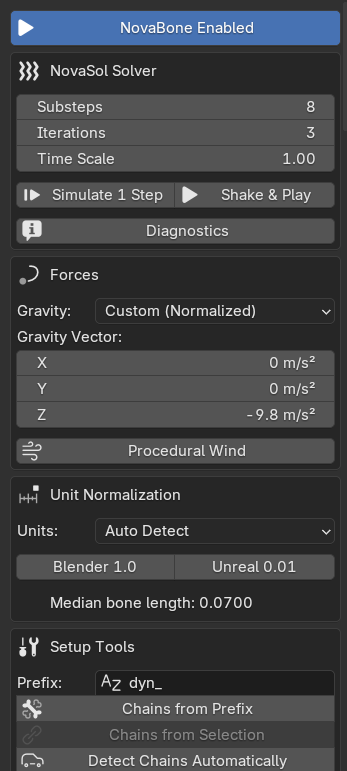
▲ N패널의 NovaBone 메인 패널 — 모든 설정이 이 한 곳에 모여 있습니다📥 설치
novabone폴더 안의 파일들을 선택해서 zip으로 압축⚠️ 폴더째 압축하지 마세요.
blender_manifest.toml이 zip 최상위에 있어야 합니다.- Blender →
Edit > Preferences > Get Extensions - 오른쪽 위
▼→ Install from Disk → zip 선택 - 설치된 NovaBone을 Enable(활성화)
- 3D 뷰포트에서
N키 → NovaBone 탭이 생깁니다
지원 버전: Blender 4.2 이상 (4.5 LTS, 5.0, 5.2 LTS 테스트 완료)
🚀 5분 안에 따라하기 (Quick Start)
▲ 뼈 선택 → 체인 생성 → 재생. 이게 전부입니다.
- 아머처 선택 후 포즈 모드 진입
- 물리를 넣고 싶은 뼈들을 전부 선택 (연결된 꼬리라면: 뿌리 뼈를 마지막에 클릭, 나머지는 Shift+클릭)
- N패널 → Setup Tools →
Chains from Selection클릭 - 뼈가 살짝 늘어지면 성공! 스페이스바로 재생
- 몸 뼈를 움직이면 체인이 물리적으로 따라 흔들립니다 🎉
💡 Shake & Play 버튼은 뼈를 흔들고 + 재생까지 자동으로 시작합니다. 출렁이면 엔진 정상입니다.
🧭 패널 구조
▲ 3D 뷰포트 사이드바(N)의 NovaBone 탭
| 섹션 | 역할 |
|---|---|
| NovaBone Enabled | 애드온 전체 스위치 |
| NovaSol Solver | 물리 품질·테스트 도구 |
| Forces | 중력·바람 |
| Unit Normalization | 릭 스케일 보정 |
| Setup Tools | 체인 만들기 |
| Armature | 오브젝트별 설정 |
| Chains | 체인별 상세 물리 |
| Bake & Reset | 베이크·리셋 |
1️⃣ NovaBone Enabled
가장 위의 큰 버튼. ON이어야 물리가 작동합니다. 체인 생성 시 자동 ON. OFF면 물리가 멈추고 애니메이션 원본대로 재생됩니다.
2️⃣ NovaSol Solver (물리 품질)
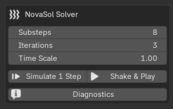
| 항목 | 설명 | 권장값 |
|---|---|---|
| Substeps | 프레임 1장을 몇 조각으로 나눠 계산. 높을수록 부드럽고 단단하고 충돌 아티팩트도 줄어듦 | 8 (접촉 많거나 빠른 장면 10~16) |
| Iterations | 제약(길이·각도) 반복 계산 횟수 | 3 |
| Time Scale | 물리 시간 속도 (2 = 두 배 빠름, 0.5 = 슬로모션) | 1.0 |
| 버튼 | 역할 |
|---|---|
| Simulate 1 Step | 현재 프레임에서 딱 1프레임만 진행 (미세 확인) |
| Shake & Play | 뼈를 랜덤하게 흔들고 자동 재생 시작. 재생 중 다시 누르면 정지 |
| Diagnostics | 엔진 상태·숨은 오류 표시. 문제 발생 시 가장 먼저 클릭 |
⚠️ 물리는 프레임이 바뀔 때 계산됩니다. 정지 상태에서 안 움직이는 건 정상입니다.
🎯 충돌 정밀 엔진 (v1.0.0)
NovaSol의 충돌은 더 이상 뼈당 구 1개가 아닙니다. 매 서브스텝마다:
- 볼륨 프로빙 — 체인에서 고른 Shape(Capsule / Cylinder / Box)를 실제 볼륨 따라 제한된 수의 구 프로브로 샘플링합니다: 캡슐은 척추선, 실린더는 측면 링, 박스는 모서리 오프셋까지. 뼈 중간이 벽을 비집고 지나가던 누수와 "Box인데 둥글게 밀려나던" 문제가 사라졌습니다.
- 멀티 접촉 — 서로 다른 최대 3개 접촉(법선이 60° 이상 차이)을 동시 해결: 가장 깊은 접촉은 100%, 나머지는 60% 강도로 밀어냅니다. 모서리에 걸친 뼈가 한쪽 벽에서만 떨리지 않고 양쪽 모두에 안착됩니다.
- 스윕 CCD — 한 서브스텝에 충돌 반경의 절반 이상 이동한 뼈는 이동 경로 자체를 검사해 마지막 안전 지점으로 되돌립니다. 빠른 휘두름이 얇은 판을 순간 통과하는 터널링이 잡힙니다.
- 안티폴드 — 모든 접촉 보정에는 예산이 있습니다(라운드당 뼈 길이의 최대 75%) + 방향 클램프(라운드당 최대 45°). 뼈가 한 번에 뒤집혀 접히는 것은 구조적으로 불가능하며, 대신 몇 프레임에 걸쳐 표면을 미끄러져 내려갑니다.
- 안티킹크 — 접촉 해결 후, 모든 뼈의 방향을 이웃 뼈 평균 방향으로 15%씩 완만히 혼합(Chain 모드만)합니다. 지그재그뿐 아니라 되접힘도 이 단계에서 펴집니다. 예외는 두 가지, 둘 다 "어디에 작용하는가"에 대한 것입니다: 표면에 닿아 있는 뼈는 충돌이 잡아준 자리에 그대로 두고, 체인의 양 끝 뼈는 건드리지 않습니다. 단 그 관절이 실제 접힘(90° 초과) 이면 두 예외가 모두 풀립니다 — 그러지 않으면 이웃에 되접힌 뼈를 펼 패스가 아예 존재하지 않고, 체인이 표면에 안착하는 순간 만들어지는 과도 V자 꺽임(실측 최고 96–99°)도 100° 임계값에서는 그냥 지나쳐 갑니다. 구 위 10뼈 드레이프 실측: 기존 규칙 최악 관절 176°, 120° 기준 152°, 90° 기준 87°. 안착 중 꺽임 실측(사용자 씬): 98.8° → 31°. 접히지 않은 씬은 그대로입니다(하네스 구: 끝단 채터링 0.336 → 0.339, 안착 높이 0.4355 → 0.4338).
심하게 감기는 체인이라면 양 끝을 모든 각도에서 완화하면 완전히 펴집니다(실측 최악 관절 19°, 대신 평범한 드레이프의 모양이 바뀝니다: 안착 높이 0.4355 → 0.2651). 기본값은 위의 보수적 규칙입니다. 6. 잔여 재검사 — 클램프/예산 절단이 발동한 뼈만(평시엔 0회) 충돌 라운드 끝에 쿼리 1회 + 작은 외부 밀어냄을 추가해, 라운드가 항상 표면 바깥에서 끝나도록 보장합니다. 7. 안쪽 감지 — 이미 표면 뒤로 들어간 프로브도(반지름 + 본 길이의 절반까지) 다시 밖으로 밀어냅니다. 면 법선 방향 레이가 면의 뒤쪽으로 빠져나가야 안쪽으로 판정하므로, 날카로운 모서리 바깥의 점을 안쪽으로 착각하지 않습니다. 8. 밀어내기 분배 — 본의 머리 쪽에 닿은 접촉은 머리에 가까운 만큼 부모의 끝도 함께 밀어서, 본이 자기 머리를 축으로 크게 돌지 않습니다. 첫 번째 본의 머리는 부모에 고정돼 있어서 그 본은 혼자 받습니다. 9. 뿌리 완화 — 그 첫 번째 본은 머리가 이미 반경보다 가까이 있어도 전체 반경을 지키라고 요구받지 않습니다. 프로브가 지켜야 하는 거리가 머리의 실제 거리에서 끝의 전체 반경까지 서서히 커집니다 (Probe 모드). 10. 묻힌 부분은 건드리지 않음 — 체인의 뿌리에서 끊기지 않고 이어지는 구간 중 애니메이션이 이미 닫힌 충돌체 속에 묻어 둔 부분은 충돌로 취급하지 않습니다.
💡 전부 자동입니다 — 새 슬라이더 없음. 패널 하단
Solve xx ms가 오르면 Substeps를 먼저 낮추세요. 프로브 밀도가 좋아져서 예전만큼 Substeps가 필요 없습니다.
Contact Mode: Probe (Fast) vs Precise (Mesh) — v1.1.0
위 설명은 전부 기본값인 Probe (Fast) 기준입니다: 뼈 볼륨을 서브스텝당 최대 16개 구 프로브로 샘플링합니다. 프로브는 자기 구가 표면에 닿아야만 접촉을 보고할 수 있으므로, 두 프로브 사이에 끼어 있는 작은 형상은 깊이가 과소 측정됩니다.
Precise (Mesh)는 그 측정 자체를 바꿉니다. 삼각화된 캡슐 프록시를
콜라이더 BVH와 교차시키고(BVHTree.overlap, C 레벨 순회), 후보 삼각형마다
뼈의 실제 선분과의 최단 거리를 계산합니다. 따라서 보고되는 깊이가 정확하고
샘플 사이로 빠져나가는 누수가 구조적으로 불가능합니다.
| Probe (Fast) | Precise (Mesh) | |
|---|---|---|
| 접촉 깊이 | 샘플링 | 정확 |
| 두 프로브 사이의 작은 형상 | 과소 측정 (0.1 단위 판에서 0.0086 ≈ 9% 측정됨) | 정확 (0.0000) |
| 솔브 비용 | 1배 | 6뼈 체인 실측 3.0배(Capsule)·2.0배(Box)·1.8배(Cylinder) — Substeps 8 권장 |
| 충돌 형상 | 체인의 Shape (Capsule / Cylinder / Box) | 뼈의 캡슐 + Shape 프로브 깊이를 바닥값으로 유지 |
⚠️ 마지막 줄 설명: Precise는 뼈의 캡슐을 정확히 측정하지만, 프로브보다 얇게 밀어내지는 않습니다. 프로브가 이미 본 면마다 둘 중 큰 깊이를 유지하므로, 체인을 Precise로 바꿨다고 해서 예전보다 더 깊이 파고들 수는 없습니다 — 원통 체인을 옆에서 접근시켜 검증했는데, 캡슐만 쓰면 Radius 0.25 에서 0.011 더 얕게 나왔습니다(실린더의 측면 프로브는 반경의 최대 1.8배 표면을 모델링합니다). 정확한 측정은 프로브가 과소 측정했던 곳에서만 더 밀어낼 뿐입니다.
같은 6뼈 구 씬 실측: 안착 높이는 유지되고(Cylinder 0.3753 → 0.3753, Box 0.3734 → 0.3744) 끝단 채터링은 좋아집니다(Cylinder 0.348 → 0.277, Box 0.366 → 0.277). Box를 박스답게 만들려고 쓰는 옵션이 아니라 벽이 얇거나 모서리가 날카로운 곳에 쓰는 옵션입니다.
3️⃣ Forces (중력·바람)
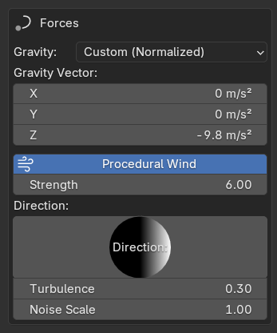
▲ Procedural Wind를 켠 모습Gravity
| 모드 | 설명 |
|---|---|
| Custom (Normalized) | 기본. 벡터 직접 입력 (기본 0,0,-9.81). 스케일 무관 동일 느낌 |
| Scene Gravity | 씬 중력 설정 사용 |
| Zero | 무중력 |
Procedural Wind (내장 바람)
▲ 바람 ON + 재생만으로 머리카락이 계속 살랑입니다
| 항목 | 설명 |
|---|---|
| Strength | 바람 세기 (6~10이면 확실히 보임) |
| Direction | 바람 방향 |
| Turbulence | 난기류 — 높을수록 랜덤 출렁임 |
| Noise Scale | 패턴 크기. 낮으면 큰 물결, 높으면 잘게 |
💡 재생만으로 지속 움직임을 원하면 바람을 켜세요.
4️⃣ Unit Normalization ⭐ (스케일 문제 해결)
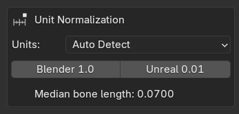
"블렌더 릭은 뼈 길이 1.0, 언리얼 임포트는 0.01이라 같은 값이 안 먹는다" 는 고질 문제의 해결 기능. 모든 물리량을 기준 뼈 길이(L)로 나눈 정규화 공간에서 계산하므로 같은 값 = 어떤 스케일에서든 동일한 움직임.
| 항목 | 설명 |
|---|---|
| Auto Detect | 기본. 체인 뼈 길이 중간값을 자동 기준으로 사용. 대부분 이대로면 끝 |
| Manual | 기준 길이 직접 입력 |
스케일 프리셋: Blender 1.0 / Unreal 0.01 버튼 한 번 클릭으로 끝.
▲ 아래 표시되는 Median bone length가 자동 감지된 기준값입니다
5️⃣ Setup Tools (체인 만들기)
Bone Prefix (접두사) — 게임 릭 추천
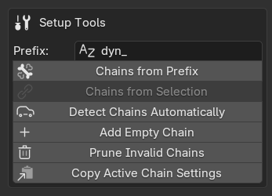
▲ dyn_ 뼈들이 한 번에 체인화됩니다- Prefix에 접두사 입력 (기본
dyn_) - Chains from Prefix 클릭
- 접두사 뼈 전부 자동 체인화
| Mode | 동작 |
|---|---|
| Group Chains | 연결된 dyn_ 뼈들은 하나의 체인으로 (권장) |
| Individual Bones | 각각 독립 1뼈 체인 (액세서리 다수에 유용) |
Chains from Selection
- 포즈 모드에서 뼈 선택 — 뿌리 뼈를 마지막에 클릭
- 버튼 클릭
| Mode | 동작 |
|---|---|
| Auto | 경로가 있으면 체인, 없으면 개별 체인 자동 처리 (권장) |
| Chain to Active | 활성 뼈 아래로 연결된 것만 |
| Individual Bones | 선택 뼈 각각 독립 체인 |
✅ 뼈 1개만 선택해도 됩니다: 뼈를 딱 1개 선택하고 실행하면 1뼈 체인(Start = End = 그 뼈)이 생성됩니다. 더 이상 "No chain created" 경고가 나오지 않습니다. Auto 모드에서 활성(뿌리) 뼈가 조용히 빠지던 문제도 수정되었습니다.
💡 액세서리 여러 개 한 번에: 목걸이·귀걸이 뼈들을 전부 선택하고 Auto로 실행하면 각자 개별 체인이 되어 한꺼번에 물리가 걸립니다.
Detect Chains Automatically
선택 없이 자식 없는 끝 뼈(팁)를 자동으로 찾아 연속 구간을 체인화. 릭 구조를 몰라도 됩니다.
| 버튼 | 역할 |
|---|---|
| Add Empty Chain | 빈 체인 추가 (Start/End 수동 입력용) |
| Prune Invalid Chains | 깨진 체인 일괄 정리 |
| Copy Active Chain Settings | 활성 체인 설정을 다른 모든 체인에 복사 |
| Resolve From Start/End | Start/End 뼈 이름만으로 경로 자동 완성 |
| Select Chain Bones | 체인 뼈들을 뷰포트에서 선택 |
Fix Bone Orientation (본 방향 교정)
언리얼에서 가져온 본은 체인 방향을 향하지 않는 경우가 많아서, 다이내믹스 솔버가 옆으로 흔들어 버립니다. 이 패널(탭 NovaBone → Fix Bone Orientation, 기본은 닫힘)이 본의 꼬리 방향을 다시 맞춥니다. 헤드는 절대 움직이지 않습니다.
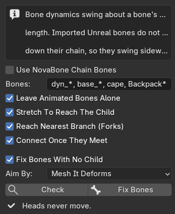
| 항목 | 설명 |
|---|---|
| Use NovaBone Chain Bones | 이 아마추어의 체인에 이미 들어 있는 본만 교정합니다. 이름 패턴은 무시됩니다 |
| Bones | 교정할 본. 쉼표로 구분하고 *는 아무 문자열, 비우면 모든 본. 기본값 dyn_*, base_*, cape, Backpack* |
| Leave Animated Bones Alone | 위치·회전·스케일에 키가 있는 본(액션 또는 NLA)은 건너뛰어 애니메이션이 바뀌지 않게 합니다. 끄면 캐릭터가 접힐 수 있습니다 |
| Stretch To Reach The Child | 꼬리가 자식의 헤드에 닿을 때까지 본을 늘려 체인을 이어 줍니다. 메시는 움직이지 않습니다 |
| Reach Nearest Branch (Forks) | 자식이 여러 개인 본은 가장 가까운 자식에 닿게 해서 메인 가지가 이어지게 합니다 |
| Connect Once They Meet | 헤드가 부모의 꼬리에 놓인 본은 Connected를 켭니다 |
| Fix Bones With No Child / Aim By | 마지막 본이 향할 곳: Mesh It Deforms, Gravity (Down), Along Its Parent, Leave Them Alone |
| Check | 바뀔 본의 수를 세고, 키 때문에 건드리지 않은 본의 이름을 보여줍니다. 아무것도 바꾸지 않습니다 |
| Fix Bones | 본 방향을 맞추고, 스킨된 메시가 움직였는지 보고합니다 |
자식이 헤드 위에 정확히 얹힌 본(MSTR_x / x_1 쌍)은 그 자식 방향으로 돌립니다.
6️⃣ Armature 섹션
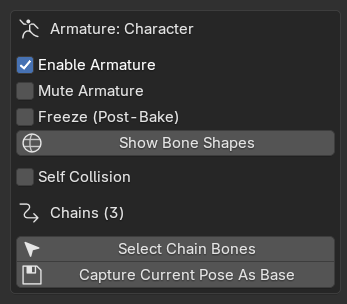
| 항목 | 설명 |
|---|---|
| Enable Armature | 이 아머처 물리 ON/OFF |
| Mute Armature | 일시 정지 |
| Freeze (Post-Bake) | 베이크 후 물리 중단 (결과 보존) |
| Show Bone Shapes ⭐ | 충돌 셰이퍼 표시 |
| Self Collision | 체인 뼈들끼리 서로 밀어냄 |
Show Bone Shapes — 충돌 셰이퍼 ⭐
▲ 캡슐이 본 헤드~테일에 정확히 걸쳐서 함께 움직입니다. Radius를 올리면 지름이 커집니다
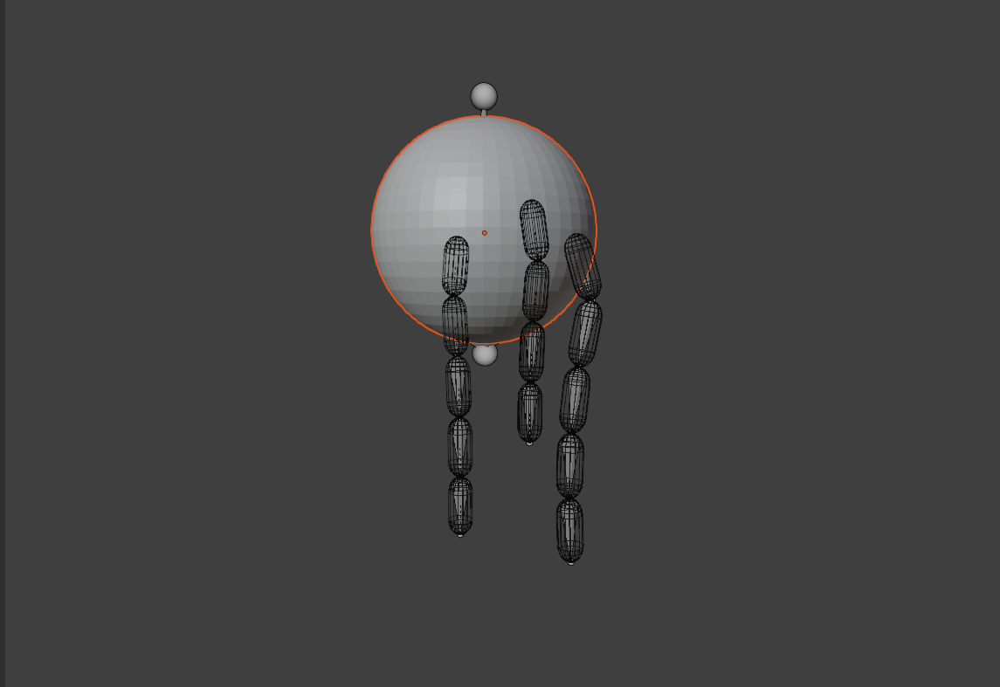
▲ 머리카락 체인을 둘러싼 캡슐과 충돌 대상셰이퍼는 새 뼈가 아닙니다. 뼈의 충돌 범위를 눈으로 보여주는 시각화 메쉬입니다.
- Capsule / Cylinder / Box 중 선택
- Radius = 충돌 두께 (뼈 길이 대비 비율 — 스케일 무관)
- 재생 중에도 물리 뼈에 픽셀 단위로 정확히 부착
- Legacy Physics (Collision) 엔진에서는 이 셰이퍼가 실제 충돌체 역할
- NovaSol 엔진에서도 이제 고른 Shape가 실제 충돌 볼륨으로 사용됩니다 (위 충돌 정밀 엔진 참고)
💡 튜닝 절차: Show Bone Shapes ON → Radius 조절 → 캡슐이 몸에 살짝 겹치는 지점이 "충돌 시작 지점"입니다.
7️⃣ Chains (체인별 설정)
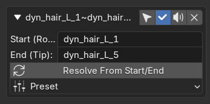
▲ 체인 헤더: 선택, 활성, 음소거, 삭제 / Start·End 본 / Preset체인 박스의 ▼를 눌러 펼칩니다.
체인 행 헤더: [▼] [이름] [🎯선택] [✓ 시뮬ON/OFF] [🔇 음소거] [X 삭제]
🎯 체인별 선택 버튼 — 체인이 10~20개 이상 나열되어도 각 행의 선택 버튼을 누르면 그 체인의 뼈만 뷰포트에서 선택되고, 동시에 그 체인이 활성 체인이 됩니다(이어서 Preset/설정 복사를 누르면 클릭한 그 체인에 적용). 어떤 체인이 어떤 뼈인지 더 이상 추측할 필요 없습니다.
🎵 Motion (움직임 타입)
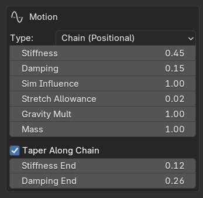
▲ Chain (Positional) 설정. Taper Along Chain을 켜면 Stiffness End / Damping End가 나타납니다▲ 머리를 좌우로 움직이면 머리카락 체인이 한 박자 늦게 따라와서 되돌아 흔들립니다 (Chain 모드, Hair 프리셋)
| Type | 설명 |
|---|---|
| Chain (Positional) | 기본. 안정적인 위치 기반 물리. 오버슈트 없음. 안티킹크 스무딩 적용 |
| Spring (Force) | 스프링 지글본. 통통 튀며 여러 번 출렁. 가방·가슴·배에 최적 |
| 항목 | Chain에서 | Spring에서 |
|---|---|---|
| Stiffness | 목표 추적 강도 | 스프링 상수 k |
| Damping | 속도 감쇠 | 속도 저항 c (낮을수록 오래 출렁) |
| Taper Along Chain | 끝으로 갈수록 말랑 (ON 권장) | 동일 |
| Influence | 0=애니메이션, 1=물리, 중간=블렌딩. 최종 포즈가 (1−influence) 비율로 원본 애니와 섞이고, 섞인 포즈는 충돌체 밖으로 다시 밀어냅니다. 그래도 충돌 장면에서는 1.0이 가장 정확합니다 | 동일 |
| Stretch | 뼈 늘어남 허용치 (0.2 = ±10%). 충돌 장면에선 0 권장 | 동일 |
| Gravity / Mass | 중력 배율 / 무게감 | 동일 |
📐 Limits
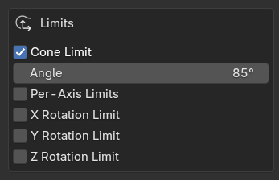
| 항목 | 설명 |
|---|---|
| Cone Limit | 뿌리 기준 최대 꺾임 각도 |
| Per-Axis Limits | X/Z 축별 제한 (스커트 등) |
🥚 Bone Collision Shape
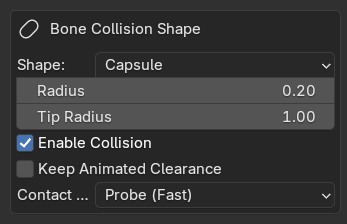
| 항목 | 설명 | 접촉 장면 권장값 |
|---|---|---|
| Shape | Capsule(권장) / Cylinder / Box — 세 모양 모두 NovaSol에서 실제 형태로 충돌 | Capsule |
| Radius | 충돌 두께 (비율 — 스케일 무관) | 0.18~0.25 |
| Tip Radius | 마지막 본의 반경을 Radius에 대한 비율로 (1 = 처음부터 끝까지 같음) | 1 |
| Keep Animated Clearance | 전체 Radius까지 밀어내지 않고 애니메이션 포즈가 이미 가진 간격만 유지 | OFF; 두피에 붙은 머리카락이면 ON |
| Enable Collision | 이 체인의 충돌 ON/OFF | ON |
| Margin | 반경 바깥 여유 두께 | 0.02~0.05 |
| Friction | 접촉 시 접선 속도 감쇠 | 0.4~0.6 |
| Bounce | 접촉 반발 | 0.05~0.15 (높으면 꺽임 재발) |
⚙️ Collision Engine
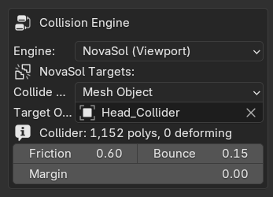
▲ NovaSol 엔진 + 충돌 대상 지정▲ 움직이는 충돌체가 늘어진 체인을 쓸고 지나가면 체인이 밀려났다가 돌아옵니다
▲ NovaSol 충돌: 팔을 움직이면 머리카락이 몸에서 밀려납니다
| Engine | 설명 |
|---|---|
| NovaSol (Viewport) | 내장 솔버가 실시간 밀어냄 — 볼륨 프로빙, 멀티 접촉, 스윕 CCD, 안티폴드, 안티킹크 전부 적용. Collide With = Mesh Object 또는 Collection |
| Legacy Physics (Collision) | 셰이퍼가 진짜 블렌더 충돌 오브젝트로 변신. 예전 Cloth 수정자, 파티클 Hair, Softbody용. Blender 5.2 시뮬레이션 노드는 이걸 무시합니다 |
| Simulation Nodes (5.2+) | 체인이 Blender Hair Dynamics 솔버가 돌리는 헤어 스트랜드가 되고, 충돌 대상에는 Collider 노드 그룹이 붙습니다. Blender 5.2 이상 필요 |
Legacy Physics Profile: Hair(얇은 껍질·저마찰) / Cloth(두꺼운 껍질·고감쇠) / Custom
External Targets: 본이 붙은 자기 옷이 아니라 상대 캐릭터·바닥·다른 의상 등
외부 충돌체 지정. Add GN Collider to Targets로 공식 Collider 수정자 추가.
⚠️ 클로스 연동 순서: ① Show Bone Shapes ON ② 옷에 Cloth 수정자 ③ Cloth의 Cloth Collisions 체크 ④ 재생
Simulation Nodes (5.2+)
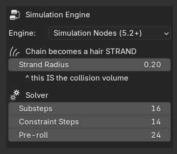
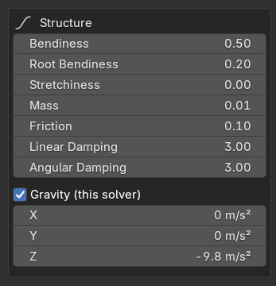
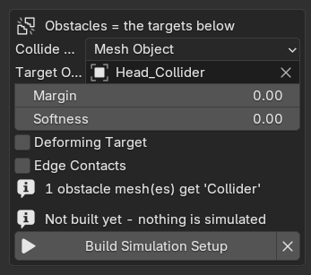
▲ Simulation Nodes 엔진의 Engine, Solver, Structure, Gravity, Obstacles- Engine = Simulation Nodes (5.2+)
- Collide With = 몸 메시 또는 컬렉션
- Build Simulation Setup 클릭 (옆의 ✕는 셋업을 지웁니다)
| 항목 | 설명 |
|---|---|
| Strand Radius | 스트랜드 두께 — 이게 곧 충돌 볼륨입니다. 바로 반영 |
| Substeps / Constraint Steps | 솔버 자체의 품질 설정 |
| Pre-roll | Build 때 스트랜드를 안착시키는 프레임 수. 재생 시작부터 떨어지는 동작이 나오지 않게 합니다 |
| Bendiness / Root Bendiness / Stretchiness / Mass | 스트랜드 구조 |
| Friction | 장애물과의 마찰 |
| Linear / Angular Damping | 떨리면 / 채찍처럼 휘면 올리세요 |
| Gravity (this solver) | NovaSol 중력은 이 솔버에 적용되지 않습니다 |
| Margin / Softness / Deforming Target / Edge Contacts | 장애물의 Collider 설정. 변형되는 메시(아마추어·셰이프키)면 Deforming Target 체크 |
위 슬라이더는 다시 Build하지 않아도 바로 반영됩니다. 씬의 Time Scale도 적용됩니다. Pre-roll이나 체인 본을 바꾸면 Build를 다시 누르세요.
💡 장애물 메시 하나에는 Collider 설정이 하나만 붙으므로, 두 체인이 같은 장애물을 쓰면 마지막에 Build한 체인의 Margin / Friction이 적용됩니다.
🎈 Floating Head
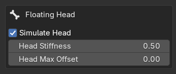
Use Connect가 꺼진 분리 뼈(장신구 등)의 머리 끝도 물리로 시뮬합니다.
| 항목 | 설명 |
|---|---|
| Simulate Head | 헤드 시뮬 ON |
| Head Stiffness | 원위치로 당기는 힘 |
| Head Max Offset | 최대 이탈 거리 (0 = 무제한) |
🎯 Capture Current Pose As Base
체인 목록 아래에 있습니다. 키프레임이 없는 본은 Stiffness에 의해 기본 자세 — 체인을 만들 때의 자세 — 쪽으로 당겨집니다. 본을 쉬는 자세로 잡고 이 버튼을 누르면 그게 새 기본 자세가 됩니다. 체인을 다시 만들어도(체인 추가·삭제, Copy Settings, Undo) 기본 자세는 유지됩니다.
8️⃣ Bake & Reset
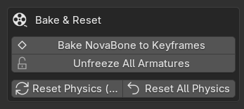
| 버튼 | 설명 |
|---|---|
| Bake NovaBone to Keyframes | 재생 구간 전체를 시뮬해 키프레임으로 굽기. 게임 엔진 반출 필수. Preroll로 시작 전 안정화 |
| Unfreeze All Armatures | 베이크 후 Freeze 해제 |
| Reset Physics (Active) | 활성 아머처 물리 초기화 |
| Reset All Physics | 씬 전체 초기화 |
🎨 프리셋 가이드
| 프리셋 | 느낌 | 용도 |
|---|---|---|
| Hair | 부드럽게 흘러내림 | 머리카락 |
| Jelly | 젤리 출렁임 | 뚱한 장식 |
| Cloth | 천처럼 느슨 | 스카프, 리본 |
| Tail | 둥글게 휘어짐 | 꼬리 |
| Accessory | 단단하게 흔들림 | 귀걸이, 목걸이 |
| Antenna | 거의 안 휘어짐 | 안테나, 깃털 |
| Jiggle | 크게 처지고 출렁 | 가슴, 배 |
| Spring ⭐ | 스프링처럼 통통 | 스프링 지글본 |
📋 시나리오 레시피
👱 머리카락
1. 머리 뼈 선택 (뿌리 마지막 클릭) → `Chains from Selection` 2. Preset: **Hair** 3. Show Bone Shapes ON → Radius 조절 4. Collision: NovaSol + 몸통 메시 지정, **Influence 1.0**, Bounce 0.1, Margin 0.03 5. 재생해서 팔이 머리를 스칠 때 밀려나는지 확인👝 액세서리 여러 개
1. 액세서리 뼈 전체 선택 → `Chains from Selection` (Auto) 2. 하나 튜닝 후 **Copy Active Chain Settings**로 전체 복사 3. 각 행의 🎯 선택 버튼으로 어떤 체인이 어떤 뼈인지 바로 확인🎒 스프링 가방
1. 가방 체인 생성 → Preset: **Spring** 2. Shake & Play → 통통 출렁임 확인 3. Damping ↑ = 빨리 잠잠🩳 스커트
1. Prefix가 있으면 `Chains from Prefix` 2. Preset: **Cloth** 3. Cone Limit 60~70° 4. Self Collision ON (치맛자락 겹침 방지)🧵 클로스 연동
1. Engine = **Legacy Physics (Collision)**, Profile = **Cloth** 2. **Show Bone Shapes ON** 3. 옷에 Cloth 수정자 → **Cloth Collisions 체크** 4. 재생⛓️ 구/몸통 위에 체인 드레이프시키기 (접촉 튜닝)
*▲ 체인이 구 위로 떨어져 표면을 따라 늘어집니다 (Cloth 프리셋, Stiffness 0)* 1. Influence **1.0**, Stretch **0**, Stiffness **0.05~0.1** 정도 2. Bounce **0.05~0.15**, Friction **0.4~0.6**, Margin **0.03** 3. Radius 0.18~0.25, Substeps 12 4. 재생 — 체인이 표면을 따라 늘어져 미끄러져야 합니다. 접힘·꺽임 없이🔧 문제 해결
물리가 안 움직여요
1. NovaBone Enabled / Enable Armature ON 확인 2. Freeze OFF 확인 3. **스페이스바 재생 중인지** (정지 시 물리도 멈춤 — 정상) 4. Shake & Play 클릭 → 출렁이면 정상 5. **Stiffness가 너무 높지 않은지** — 0.5 이상이면 체인이 기본 자세를 거의 그대로 유지합니다. 늘어져야 하는 머리카락은 0.05~0.1 6. Diagnostics → 콘솔(`Window > Toggle System Console`) 확인캐릭터를 충돌 대상으로 쓸 때
1. **캐릭터 전체를 대상으로 쓰지 마세요.** 머리와 몸만 복제해서 평범한 충돌용 메시로 만들고 나머지(머리카락 카드, 귀걸이, 체인 본을 따라 움직이는 옷)는 지웁니다. 대상 메시 중 **시뮬레이션 본에 스키닝된 부분**은 본과 같이 움직이므로, 체인이 자기가 끌고 다니는 형상과 충돌할 수 있습니다. 2. 충돌용 복제본을 **Collide With**에 지정합니다. 3. 두피 속에 묻힌 머리카락 뿌리는 이제 괜찮습니다. 뿌리가 표면 바로 위에 놓인 경우에는 **Radius** × 본 길이가 유지하는 간격입니다: Radius를 낮추거나 **Keep Animated Clearance**를 켜세요. 4. 변형되는 머리(얼굴 본, 셰이프키)는 별도 설정이 필요 없습니다. 움직이는 면을 닿는 지점에서 측정합니다. 5. 먼저 충돌용 복제본으로 시험해 보세요: 안정되면 원래 대상에 체인에 스키닝된 형상이 들어 있던 것입니다.NovaSol 충돌이 안 막혀요
1. Enable Collision ON + 몸통 메시 지정 확인 2. **Sim Influence 1.0 확인** — 낮으면 보이는 포즈가 원본 애니 쪽으로 되감겼다가 다시 밀려 나와서, 시뮬레이션 자체보다 덜 정확합니다 3. Radius 0.2~0.3, Margin 0.02~0.05 4. 패널 하단 `Collider failed: 이름` 표시 확인 5. 빠른 움직임 → Substeps 10~16 (스윕 CCD도 자동 작동)접촉부 뼈 몇 개가 접히거나 꺽여요
1. v1.0.0 솔버 사용 확인 (안티폴드 + 안티킹크 내장) 2. Bounce 0.1로, Friction 0.4~0.6으로 낮추기 3. Substeps 10~16 — 서브스텝당 파묻힘이 얕아져 접힘 방지 장치가 거의 발동하지 않아 더 부드럽습니다 4. 설정 변경 후 Reset Physics클로스가 안 부딪혀요
1. Show Bone Shapes ON 확인 2. 옷의 Cloth 수정자에서 **Cloth Collisions 체크** 3. Engine = Legacy Physics (Collision) + Profile = Cloth뼈가 튀어요 / 밀려나요
1. 물리 뼈에서 **컨스트레인트(IK 등) 제거** — 시뮬 뼈는 순수하게 2. Reset Physics 3. 비균준 오브젝트 스케일 지양Fix Bones(본 방향 교정)가 크래시 나거요 아무 것도 안 돼요
1. 자식 뼈가 부모 머리 위에 정확히 얹힌 경우(언리얼 `MSTR_x` / `x_1` 쌍)는 그 자식 방향으로 돌립니다. Check에는 "child-on-head (aimed along the child)"로 집계됩니다 2. 실행 전 **Check**를 먼저 누르면 몇 개가 틀어졌는지, 위치/회전/스케일에 키가 있어서 건드리지 않은 본이 무엇인지 이름으로 보여줍니다 3. 그런 키가 있는 본은 일부러 건너뜁니다: 방향을 바꾸면 키가 메시에 하는 일이 달라지기 때문입니다. **Leave Animated Bones Alone**을 끄면 건너뛰지 않지만 캐릭터가 접힐 수 있습니다 4. **Use NovaBone Chain Bones**를 켜면 이름 패턴은 무시됩니다❓ FAQ
Q. NovaShape_ 오브젝트는 뭔가요?* 충돌 범위 시각화입니다. Show Bone Shapes를 끄면 자동 삭제되며 렌더에는 항상 숨겨집니다.
Q. 게임 엔진으로 어떻게 가져가나요?
Bake NovaBone to Keyframes 후 FBX 익스포트. 게임 엔진은 베이크된 애니를 재생합니다.
Q. 새 충돌 방식의 성능은? 볼륨 프로빙은 뼈당 타깃당 최대 ~16회 구 쿼리로 제한되고, 멀티 접촉·CCD는 접촉 프레임에만 추가 비용이 발생합니다. 패널 하단의 체인별 계산 시간(ms)을 보면서 조절하고, 오르면 Substeps를 먼저 낮추세요 — 프로브 밀도가 좋아져서 예전만큼 Substeps가 필요 없습니다.
Q. 뼈 1개짜리 액세서리도 되나요?
됩니다. 이제 Chains from Selection에 뼈를 딱 1개만 선택해도 바로 1뼈
체인이 생성됩니다. Individual 모드나 Detect Chains의 Include Single Bones도
가능합니다.
Q. 어떤 체인이 어떤 뼈인지 어떻게 아나요? 그 체인 행의 🎯 버튼을 누르세요 — 해당 뼈들이 뷰포트에서 선택되고 그 체인이 활성화됩니다.
📜 라이선스
GNU GENERAL PUBLIC LICENSE
Version 3, 29 June 2007
이 프로젝트는 Blender 표준 라이선스인 GPL-3.0을 따릅니다. 전체 라이선스 전문은 LICENSE 파일을 참고하세요.
Made by Chamiseul 🦴